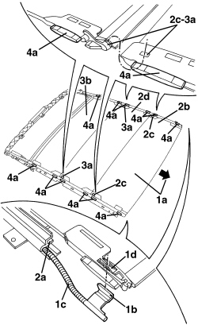
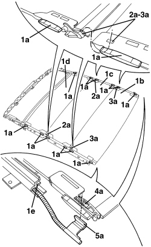
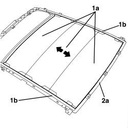

7030L22 SLIDING SUN BLIND - R.R.
- Path
- Procedures > 70 FITTINGS > 7030 SUN ROOF/GLASS PANEL > 7030L TRANSPARENT ROOF PANEL > 7030L22 SLIDING SUN BLIND - R.R.
- Kind
- repair procedure (removal / refitting; the operation number is the code)
- Applies to
- all engines; all production periods
- Interactive page
- https://sloeber94.github.io/elrnDB-aBrrSpdr/en/#/946002583
Applies to: all engines; all production periods
 Removing
Removing
 Refitting
Refitting- Remove the rear parcel shelf.
Op. 7040G30 BOOT LIGHT BULB HOLDER - R.R.
- Work on both sides of the vehicle.
Op. 7050A22 REAR SEAT CUSHION - R+R
Op. 7040H42 REAR PILLAR TRIM (ONE), LEFT OR RIGHT- R.R
Op. 7040H38 CENTRE PILLAR UPPER ELEMENT (ONE), LEFT OR RIGHT - R.R
Op. 7040H30 FRONT PILLAR TRIM (ONE), LEFT OR RIGHT - R.R.
Op. 7065C34 SUN BLIND (ONE), LEFT OR RIGHT - R.R.
Op. 7040E40 FRONT COURTESY LIGHT - R.R.
Op. 7065C60 INTERIOR REAR VIEW MIRROR FOR VERSIONS WITH RAIN/DUSK SENSOR - R.R.
Or, alternatively.
Op. 7065C68 INTERIOR REAR VIEW MIRROR - R+R
Op. 7005A34 FRONT SIDE DOOR COMPARTMENT SEAL - R.R
Op. 7030L12 TRANSPARENT ROOF PANEL COVER - R.R.
Op. 7030L20 SUN BLIND ASSEMBLY - R.R.
Op. 7030L24 SLIDING BLIND MOVEMENT MOTOR - R.R.
Op. 7030L23 SUN BLIND CROSSMEMBER - R.R.
1. Slide blind (1a) forward by hand until terminals (1b) emerge from the control cables (1c).
Disconnect terminals (1b) from blind retainers (1d) on both sides of the blind.
2. Continue to withdraw blind (1a) from slide guides (2b) until the first blind section (2b) is fully extracted; release connections (2c) with the blind section (2d).
3. Also withdraw the second blind section (2d) from the slide guides (2a) until it is fully removed. Detach connections (3a) with the third blind section (3b).
4. Also withdraw the third blind section (3b) from the slide guides (2a) until it is fully removed.
If necessary, recover the slide pads (4a)

Applies to: all engines; all production periods
Refitting
Removing- Check that the blind is not damaged.
1. Check that all slide pads (1a) are seated in blind sections (1b), (1c), (1d) and that they are clean and lightly lubricated with vaseline grease.
Check that both slide guides (1e) are clean along their entire lengths, free of foreign bodies and lightly lubricated with vaseline grease.
2. Partly insert blind section (1d) into slide guides (1e) until connections (2a) are left unfitted.
3. Fasten blind section (1c) to section (1d) already fitted using retainers (2a), then carry on inserting the two blind sections until connections (3a) of blind section (1c) are left unfitted.
4. Fasten blind section (1b) to section (1c) already fitted using retainers (3a), then carry on inserting the two blind sections until connections (4a) of blind section (1b) are left unfitted.
5. Attach terminals (5a) of the control cables to blind retainers (4a), then fully insert blind section (1b) into the guides.

Applies to: all engines; all production periods
Op. 7030L23 SUN BLIND CROSSMEMBER - R.R.
1. Test by hand that blind (1a) slides in slide guides (1b).
2. Align guide (1a) by moving it into contact with front beam (2a) by hand, then refit the motor under these conditions:
Op. 7030L24 SLIDING BLIND MOVEMENT MOTOR - R.R.

Applies to: all engines; all production periods
Op. 7030L20 SUN BLIND ASSEMBLY - R.R.
Op. 7030L12 TRANSPARENT ROOF PANEL COVER - R.R.
Op. 7005A34 FRONT SIDE DOOR COMPARTMENT SEAL - R.R
Op. 7065C68 INTERIOR REAR VIEW MIRROR - R+R
Op. 7065C60 INTERIOR REAR VIEW MIRROR FOR VERSIONS WITH RAIN/DUSK SENSOR - R.R.
Op. 7040E40 FRONT COURTESY LIGHT - R.R.
Op. 7065C34 SUN BLIND (ONE), LEFT OR RIGHT - R.R.
Op. 7040H30 FRONT PILLAR TRIM (ONE), LEFT OR RIGHT - R.R.
Op. 7040H38 CENTRE PILLAR UPPER ELEMENT (ONE), LEFT OR RIGHT - R.R
Op. 7040H42 REAR PILLAR TRIM (ONE), LEFT OR RIGHT- R.R
Topics linked from this page (14)
- 7005A34 FRONT SIDE DOOR COMPARTMENT SEAL - R.R
- 7030L12 TRANSPARENT ROOF PANEL COVER - R.R.
- 7030L20 SUN BLIND ASSEMBLY - R.R.
- 7030L23 SUN BLIND CROSSMEMBER - R.R.
- 7030L24 SLIDING BLIND MOVEMENT MOTOR - R.R.
- 7040E40 FRONT COURTESY LIGHT - R.R.
- 7040G30 BOOT LIGHT BULB HOLDER - R.R.
- 7040H30 FRONT PILLAR TRIM (ONE), LEFT OR RIGHT - R.R.
- 7040H38 CENTRE PILLAR UPPER ELEMENT (ONE), LEFT OR RIGHT - R.R
- 7040H42 REAR PILLAR TRIM (ONE), LEFT OR RIGHT- R.R
- 7050A22 REAR SEAT CUSHION - R+R
- 7065C34 SUN BLIND (ONE), LEFT OR RIGHT - R.R.
- 7065C60 INTERIOR REAR VIEW MIRROR FOR VERSIONS WITH RAIN/DUSK SENSOR - R.R.
- 7065C68 INTERIOR REAR VIEW MIRROR - R+R